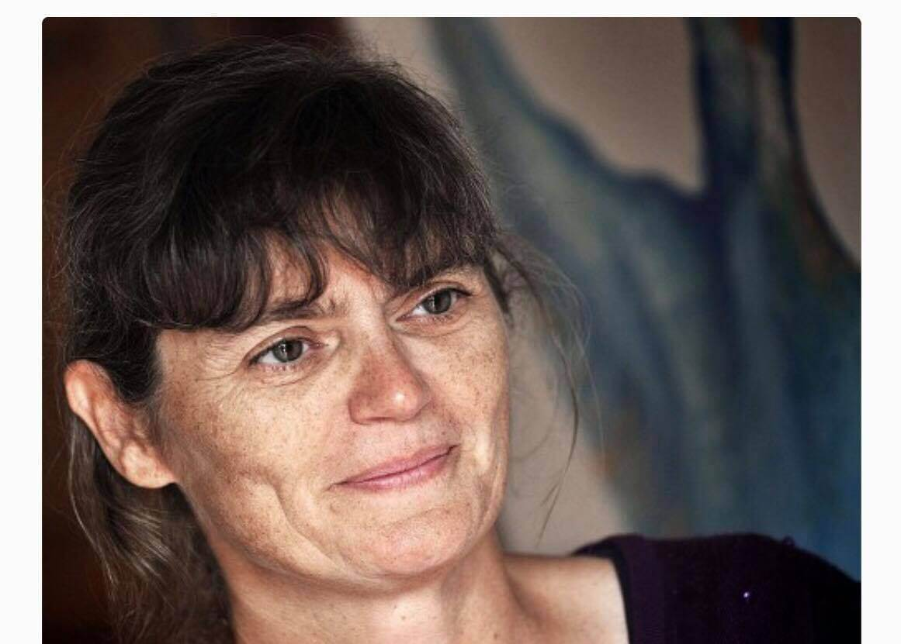
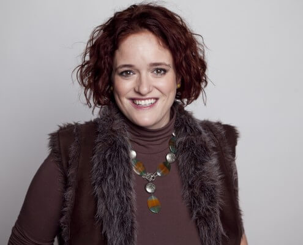
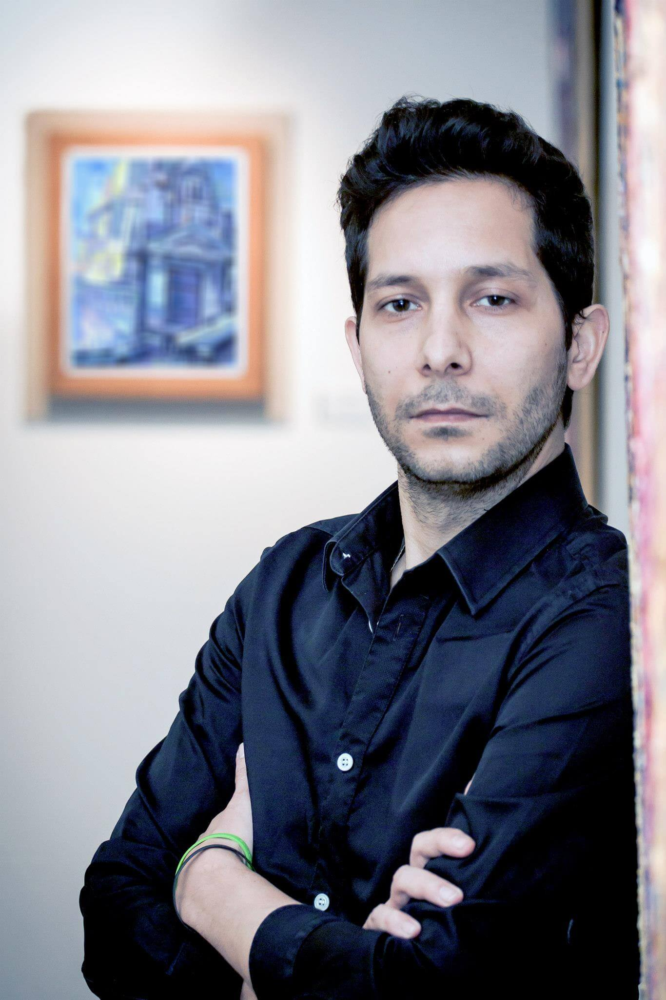
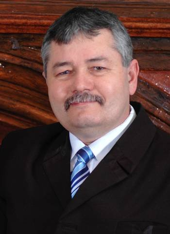
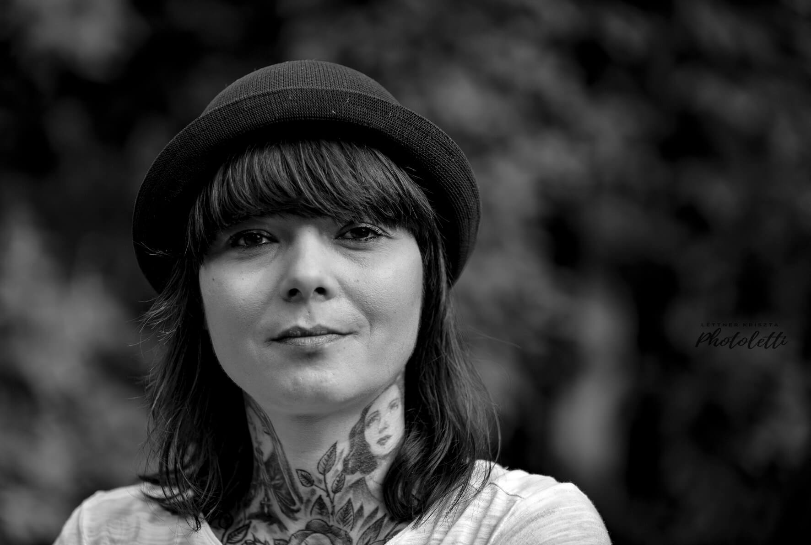

Kik vagyunk?
Mi, a Tűzcsiholók azért dolgozunk, hogy egy gyereknek se kelljen a saját családja nélkül felnőni. Tenni akarunk azért, hogy mindaz a hátrány, ami a családból való kiszakítottságból ered, már ne ismétlődjön a következő generációban. Ennek érdekében a családok megerősítése a célunk. Kell azonban, hogy legyen bennük szikra, tűz, kitartás és szorgalom.
Fedezd fel oldalunkat
Válassz az alábbi témák közül, és ismerd meg részletesen egyesületünket.
Csapatunk
Ismerd meg az egyesületünk elhivatott csapatát.
Elérhetőségeink
Lépj velünk kapcsolatba, keress minket bizalommal.
Támogatóink
Kik azok, akik már mellettünk állnak.
Átláthatóság
Alapító okirat, jelentések és szakmai beszámolók.
Média
Rólunk írták, rólunk mondták a médiában.
Galéria
Képek és pillanatok az egyesület életéből.
Csapatunk

Illésné Áncsán Aranka
elnök, szakmai vezető
Egy véletlen folytán sodródtam a gyermekotthonok világába, 18 évesen. A főiskola előtt képesítés nélküli nevelőként kezdtem el dolgozni egy leány nevelőotthonban. Négy évesen elveszítettem az édesanyámat és 17 évesen az édesapámat is. Talán ezért volt, hogy nagyon megérintett az ott élő gyerekek sorsa és hamar egyértelművé vált a számomra, hogy a gyermekvédelem lesz a hivatásom. Tanár, népművelő, közoktatásvezető és szociálpolitikus végzettségem van. 26 évig dolgoztam a tiszadobi gyermekotthonban, először nevelőként, később pedig vezetőként. 2012-től a kecskeméti SOS Gyermekfaluba kerültem. A munkám mellett mindig fontos volt számomra a civil tevékenység, több egyesület, szociális szövetkezet munkáját segítettem. Azonban minden tevékenységem mögött a mozgatórugó a gyermekvédelemmel érintettek segítése volt. Meggyőződésem, hogy a nehéz élethelyzetből kimozdítani az embereket a foglalkoztatással és az oktatással lehet, de csak akkor, ha az érintettek is tenni akarnak önmagukért.

Apáthy Judit
forrásteremtési és kommunikációs munkatárs
Hogyan is lettem Tűzcsiholó? 2007-ben egy véletlenszerűen létrejött tiszadobi táborban találkoztam először a szabolcsi gyermekotthonok lakóival. A megtört tekintetű, jobb életre ácsingózó gyermekek azonnal rabul ejtették az akkor meg tapasztalatlan, huszonéves szívemet. Kommunikáció szakos diplomámmal ekkor még PR szakmában tevékenykedtem, de a tábort követően három hónapon belül munkahely és szakma váltás lett és teljes időben foglalkozhattam ezzel a világgal. Több, mint tíz évig dolgoztam egy alapítványnál, ahol tapasztalatot szereztem az önkéntesek szervezésében, szabadidős programok és táborok szervezésében. Ezidő alatt megismertem a civil szférát, foglalkoztam támogatás gyűjtéssel, pályázatokkal. Az elmúlt években az állami gondoskodásból kikerült fiatalokkal és családjaikkal ápoltam kapcsolatot. Második diplomámat 2020-ban szereztem pasztorálpszichológiai szakreferensként, majd családkonzulensi képesítést szereztem. Bízom benne, hogy tapasztalataim és tudásom segítségére lesz az Egyesületnek.

Balogh Tibor
művészeti program felelős
1975 május 22-én születtem, Fehérgyarmaton. Szüleim lemondtak rólam, így állami gondoskodásba kerültem. Több otthonban nevelkedtem: Pétervásárán, Berkeszen, Tiszadobon. Két szakmát szereztem, majd az érettségi bizonyítvány megszerzése után felvételt nyertem a Képzőművészeti Egyetemre, ahol grafikus művész, majd később művész tanár diplomát szereztem.
A művészeti egyetem elvégzését követően Budapesten kaptam állást a Fővárosi Romano-Kher – Cigány Házban, ahol művészeti vezető voltam 8 évig. Itt nagyon sokat tanultam a cigányság kultúrájáról, ami azóta is nagy hatással van a művészeti tevékenységemre.
Munkásságomban fontosnak tartom, hogy megmutassam a nehéz sorban élő emberek életét. Nagy öröm számomra, hogy hazai kiállításokon túl a képeimet megmutathattam többek között Angliában, Dániában, Olaszországban, Németországban. Jelenleg Budapesten élek, az alkotás mellett hátrányos helyzetű fiatalokat tanítok. Az állami gondozásban eltöltött évek nem múltak el bennem nyomtalanul. Szeretnék segíteni ott, ahol szükség van rám, a tudásomra.

Illés Dávid

Csomós Balázsné

Illés László
Sofőr
Dolgoztam gépszerelőként, később gyermekfelügyelőként, majd teleházat vezettem. Jelenleg az Élj Tudatosan Egyesület által működtetett adományboltban dolgozom, ahol elsősorban logisztikai feladataim vannak. Fontosak számomra az emberi kapcsolatok, a kultúra, a közösségek. Úgy gondolom, hogy a Tűzcsiholó Egyesület sokat tehet a nehéz helyzetben lévő családokért, a tehetséges gyerekekért, ezért csatlakoztam a csapathoz.
További tagjaink

Oláh Ibolya
alapító tag
Egy szabolcsi kis faluból származom. Édesanyám 18 éves alig múlt, amikor megszülettem. Ő akkor már egyedül volt és hiába kért segítséget a rokonoktól, senki nem fogadott be bennünket. Így nem volt más választása, beadott engem egy csecsemőotthonba, hogy dolgozni tudjon. Évekig tartott, hogy rendezze az életét és megteremtse annak a feltételét, hogy magához vegyen. De én akkor már nem tudtam őt elfogadni. Egyik nevelőszülőtől a másikhoz kerültem, majd jöttek sorra a nevelőotthonok. Nem élveztem különösebben az életemet, haragudtam a világra, édesanyámra is. Szerencsére megtaláltam a boldogságot a zene világában. Az éneklés mindig vigaszt nyújtott, és barátokat is szereztem általa. A Megasztár egy új világot nyitott meg előttem, ami eleinte nagyon idegen volt számomra. Nem értettem, hogy mi történik körülöttem, de mára sok dolgot megtanultam. Szerencsém volt, mert sok nagyszerű emberrel hozott össze a sors, kiváló zenészekkel, rendezőkkel, költőkkel, akiktől lehetőségem volt tanulni. Azt azonban nem felejtettem el, hogy honnan jöttem. Fontosak nekem a sorstársaim. Ha segíthetek, boldogan teszem.

Szűcs Istvánné Ica
adománybolt vezető és adminisztrációs munkatárs
Szűcs Istvánné Ica vagyok, 57 éves, Tiszadob-Reje tanyán élek férjemmel. Két felnőtt gyermekem és négy unokám van. 26 évig a Tiszadobi Gyermekotthonban, valamint a helyi Önkormányzatnál és a Családsegítőnél dolgoztam. 2019. márciusától a Baptista Szeretetszolgálatnál, adminisztrátor munkakörben dolgozom. Nagyon sok volt állami gondozott fiatalnak követem nyomon az életét. Jó látni, hogy sokan szép családi életet élnek, a szakmájukban dolgoznak és becsülettel helyt állnak.

Jónásné Kiss Ágnes
eladó adománybolt
17 éves koromig családban nevelkedtem, de úgy alakult az életem, hogy nem maradhattam otthon. Nehezen tudtam megszokni a gyermekotthont, ahová kerültem, mégis meghatározóvá vált az életemben. A nevelőink nagy hatással voltak ránk, támaszt jelentettek. A társainkra úgy tekintettünk, mintha testvérek lettünk volna. Sokukkal ma is tartom a kapcsolatot, ha valaki bajba kerül közülünk, igyekszünk segíteni. Pár éve családot alapítottam, három gyereket nevelünk. Nekünk ők a legfontosabbak, hogy nekik jobb életük legyen, hogy ők biztonságban legyenek. Nagy öröm számomra, hogy egy adományboltban dolgozom.

Dr. Nagy Attila
Budapesten születtem 1952. évben. Jogász a végzettségem. Közel 40 évig a központi közigazgatásban, egy minisztériumban dolgoztam, ebből 24 évig vezetői beosztásban. 2015. májusában nyugállományba vonultam, majd – mellette – 2017. júliusától egy köztestületnél főtitkárként dolgozom.
Az állami gondozott gyermekek sorsával Oláh Ibolya révén ismerkedtem meg. Megfogott az amit csinál, ahogyan énekel, az a fájdalom ami a dalaiból szól. Kíváncsivá tett, hogy honnan jön. Egy idő után számomra is fontossá vált, hogy segíteni tudjak. Az egyesület alapító tagjaiban csupa elkötelezett embert ismertem meg, többen régóta jó barátaim.

Dr. Zólyomi Dorottya
Budapesten születtem 1989-ben. 2015-ben állatorvosként végeztem, majd egy év gyakornoki idő után az Állatorvostudományi Egyetem Sebészeti és Szemészeti Tanszékén helyezkedtem el ortopéd sebészként. Jelenleg is itt dolgozom, illetve a Doktori Iskola hallgatójaként a PhD fokozatom megszerzése folyamatban van. Gyermekkoromban sokat nyaraltam Tiszadobon és betekintést nyerhettem az ott működő gyermekotthon életébe, az ott szervezett táborokba. Úgy gondolom, a most alapított Tűzcsiholó Egyesület és az ehhez hasonló egyesületek igen fontos munkát végeznek társadalmunkban, ezért szívesen vállaltam az alapító tagságot.

Tóth István
Matematika kémia szakos tanár vagyok, jelenleg már nyugdíjban. Hosszú éveken át vezettem a tiszadobi gyermekvárost. Igyekeztem a rám bízott fiatalok számára egy biztos jövőképet mutatni. Fontos volt, hogy értsék, tenni kell önmagukért. Tanulni, dolgozni kell, úgy fognak tudni megélni, a gyermekeiknek hátteret biztosítani. Különleges, összetartó közösséget alkottunk. Bízom benne, hogy a nevelésünknek voltak eredményei. Ha tenni tudok még valamit ezekért az emberekért, örömmel vállalom.
Ecsek Bianka
Móron születtem 1989-ben. Az egyetemen andragógus, majd CSR-menedzser végzettséget szereztem. Jelenleg egy önálló szabályozó szervnél dolgozom kommunikációs munkatársként. Nagyon közel áll hozzám a művészet, színházi táncosként több évig lehetőségem volt fellépni. Fontosnak tartom azt, hogy ha valakiben tehetség és szorgalom van, az kapja meg a lehetőséget az előrelépéshez, különösen akkor, ha egy gyerekről van szó. Ha ez az egyesület ebben segíteni tud, akkor itt a helyem.
Elérhetőségeink
Lépj velünk kapcsolatba, keress minket bizalommal.
Egyesület (Központ)
Támogatóink
Köszönjük mindazoknak, akik támogatják munkánkat!
Átláthatóság
- Alapító okirat Letöltés PDF
- Szakmai beszámoló 2024 Letöltés PDF
- Közhasznúsági jelentés Letöltés PDF
Média megjelenések
Rólunk írták, rólunk mondták.
Galéria
Pillanatképek az életünkből.
Csatlakozz közösségünkhöz!
Maradj naprakész legfrissebb programjainkról és híreinkről.
Hírlevél Feliratkozás
Elérhetőségeink
E-mail: info@tuzcsiholo.eu
Telefon: +36 30 123 4567
Székhely: 1234 Budapest, Példa utca 12.